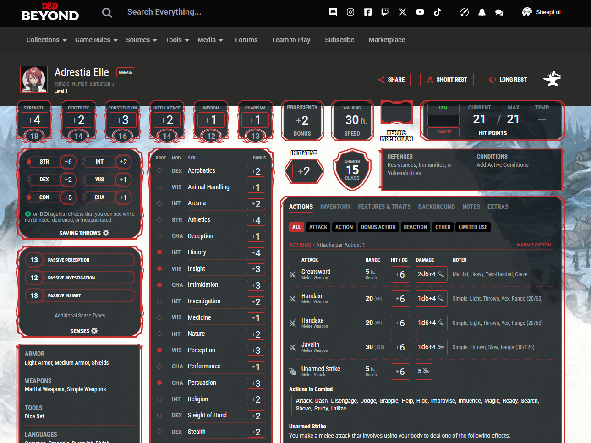
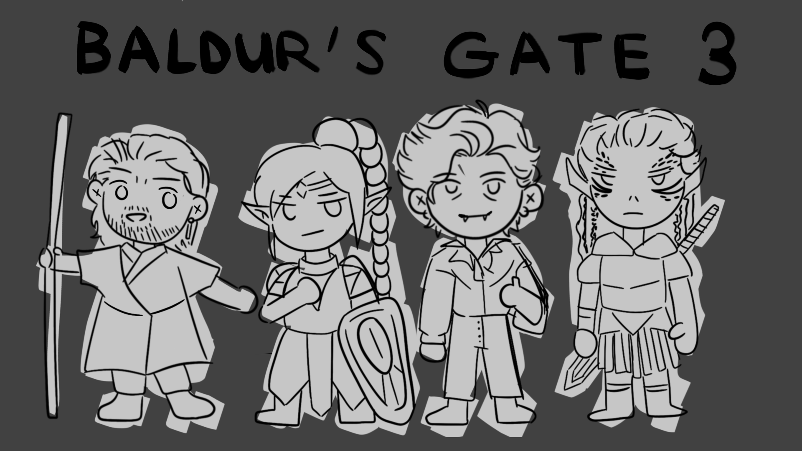

D&D Beyond: The Digital Tool for Modern Day DND
Image Source: DND characters that I have made [drawn by Lily Yang]
Dungeons & Dragons
meant gathering around a cluttered table full of printed character
sheets, physical rulebooks, and scattered dice. However, with the
rise of digital tools,
D&D Beyond has
become a companion for new and experienced players. Instead of
paper, we can use our phones and laptops to connect worldwide. As an
officially licensed platform, D&D Beyond offers players a way to
create characters, reference rules, and even roll digital dice all
in one place. What started as a simple digital rulebook has evolved
into a powerful, multi-functional tool that enhances gameplay online
and at the table.
The most impressive feature is the
character builder. Creating a character in
traditional D&D can be a lot. So many decisions need to be made, and
it gets overwhelming. Calculations, class features, and spell lists
are just the tip of the iceberg. D&D Beyond simplifies this by
walking users through every step, offering explanations, tooltips,
and automated stat adjustments, and letting players focus more on
storytelling and roleplay by handling the math. This lowers the
barrier of entry significantly, making the game more approachable.
Granted, you must know about the site to use it. Everything is
searchable and clickable, so you can find what you want.
Here is an example of a character that I made using D&D Beyond.

Character creation
is just one of many features that D&D Beyond offers, along with
other resources like
monster stats, magic items, and
encounter builders. Dungeon Masters can plan entire
campaigns within the platform, track initiatives, and manage combat
directly from their screen. And indeed, the biggest adversary of all
— basic arithmetic calculations — is done for you with one click.
However, D&D Beyond is not without its flaws. Much of the content is
locked behind a
paywall. Players must purchase digital versions of books they may already
own in print to unlock those options in the builder. This double-dip
cost can frustrate fans, especially those already invested in
physical copies. But if you are dedicated like my friends, only one
of you has to subscribe to share what you have paid for with your
players if you are the DM.
Despite these drawbacks, D&D Beyond has become a game-changer for
how my friends and I play D&D. It reduces the load of managing
characters, encourages new players to dive in, and keeps games
moving faster. And it certainly helps that I don't need to dig
through multiple pages to find the spell I want to use. Features
like
campaign content sharing, integrated dice rolls,
and the ability to invite players directly into games make
organizing sessions smoother than ever, especially for remote play.
The platform has also built a solid community where homebrew
creations and character builds are shared daily.
Check out the forum if you have any curiousities!
In this age of online campaigns and virtual tabletops, D&D Beyond is
almost impossible to live without; whether you’re a Dungeon Master
managing multiple campaigns or a newbie in the world of tabletop
learning the ropes, D&D Beyond is a digital toolkit that supplements
the D&D experience.
Baldur’s Gate 3: The Best Introduction to Dungeons & Dragons… If
You’re Willing to Pay the Price

Image Source:
Depiction of the some of the many BG3 Companions [drawn by Lily
Yang]
Expensive, Enthralling, Entertaining — Everything
you need and more. Ever heard about Dungeons & Dragons?
D&D? If you’ve ever been curious about what it feels like to dive
into that world, Baldur’s Gate 3 might be the
perfect entry point, with opinion support from maybe the biggest DND
nerd in my life.
Larian Studios developed BG3 and
won the 2023 Game of the Year. But Baldur’s Gate 3 is more than just
a video game. It’s an interactive guide to how D&D works, wrapped in
a beautifully immersive story. For players who have always wanted to
try tabletop D&D but didn’t know where to start, BG3 brings you the
dice rolls, character creation, chaotic combat, endless choices, and
wild storytelling.
The game introduces players to core D&D mechanics like
ability checks, skill rolls, spellcasting,
and turn-based combat — all while letting you
experience it through cinematic cutscenes and fully voiced
characters. You can choose from various races and classes, each
affecting how the world interacts with you. Want to be a Tiefling
Bard who has a silver tongue? Go for it. Do you prefer a Half-Orc
Barbarian who smashes first and never asks questions? That’s
possible, too. Every playthrough feels different, especially since
your choices have lasting consequences and shape the story.
One of the game’s greatest strengths is the sheer
freedom it gives players. Almost anything is
possible, whether throwing an enemy off a cliff, romancing your
favorite party member, or talking to animals to solve quests. The
addition of visible dice rolls mid-dialogue reinforces the
connection to D&D, showing players exactly when their stats are
helping or failing them. The storytelling is dynamic, with countless
branching paths, companion stories, and a world that reacts to your
choices.
The game offers co-op, letting you and your friends
make a party and experience the adventure together like a real D&D
campaign. This game puts you into a world where you can try and
learn about the gameplay mechanics of D&D without the pressure of a
table full of people. You can play at your own pace, explore the
world, and make choices that matter. It’s a great way to learn the
rules and get a feel for how D&D works before diving into a tabletop
campaign.
Of course, this level of quality comes at a cost. Baldur’s Gate 3 is
expensive, retailing at $60, and demands significant storage space,
clocking in at over 120 GB. For players without a high-end PC or
console or those unwilling to spend that much upfront, it’s a
commitment.
Click here to see if you can run it!
However, what you get is arguably worth it on average: 70–100 hours
of gameplay for one run (and even more for completionists). From my
limited sample size of friends among those who have played, 400 to
700 hours of gameplay. BG3 also has a thriving
modding community
and replayability, ensuring every campaign feels unique.
With all its content, customization, and attention to detail,
Baldur’s Gate 3 is easily one of the best video game adaptations of
Dungeons & Dragons ever made. Whether you’re a jaded
veteran player or a fresh newcomer, this game delivers an
unforgettable experience. If you’re willing to invest the time,
space, and money, Baldur’s Gate 3 offers endless
hours of adventure, laughter, heartbreak, and triumph — everything
D&D fans love.
Check out the game here!